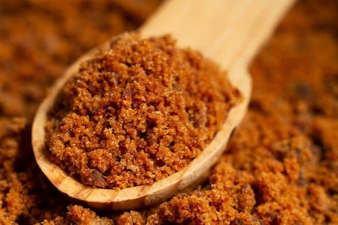
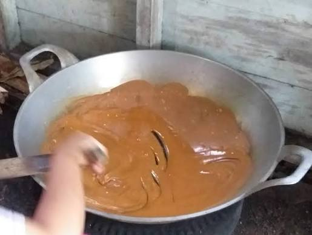

Tentang Kami
Sekar Arum adalah usaha keluarga yang mengolah nira kelapa menjadi gula semut organik sejak 2015.

Mengapa Memilih Kami?
- Tanpa bahan pengawet dan pemutih
- Bersertifikat organik
- Dikerjakan oleh petani nira lokal
Cara Pemesanan
- Pilih produk dan jumlah
- Hubungi kami melalui WhatsApp
- Lakukan pembayaran, pesanan dikirim
Produk dan Harga
| Produk | Ukuran | Harga |
|---|---|---|
| Gula Semut Original | 250 g | Rp18.000 |
| Gula Semut Original | 500 g | Rp34.000 |
| Gula Semut Jahe | 250 g | Rp22.000 |

Hubungi Kami
Jl. Raya Baturraden No. 10
Banyumas, Jawa Tengah